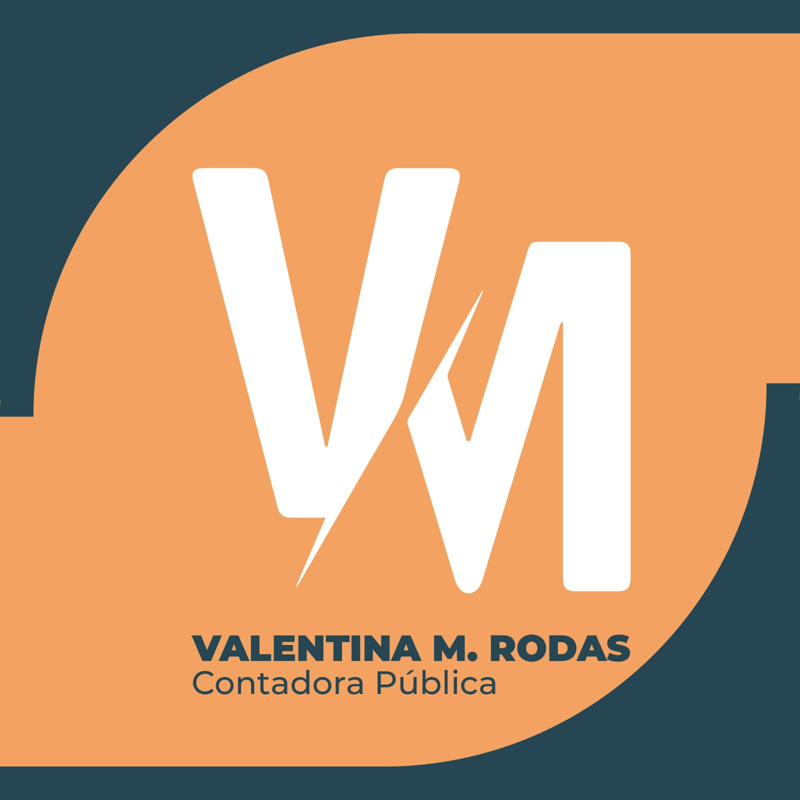
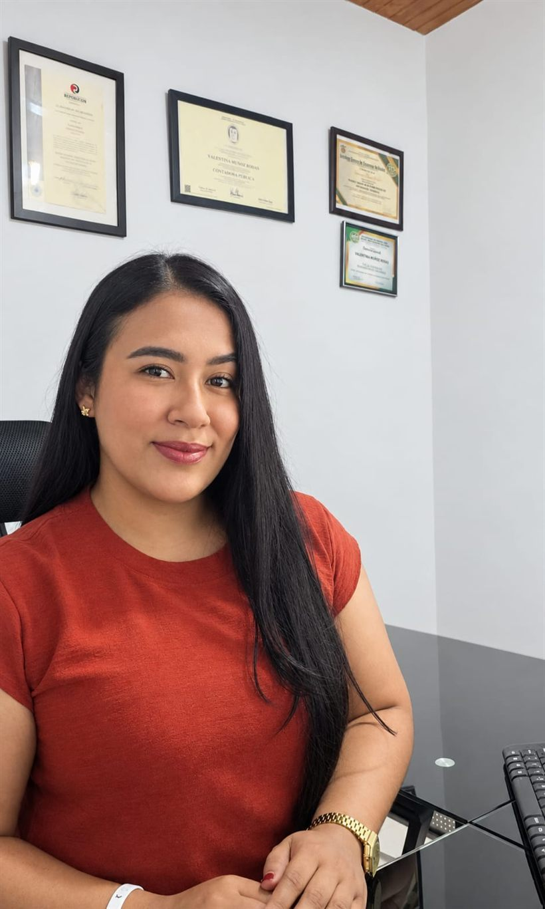
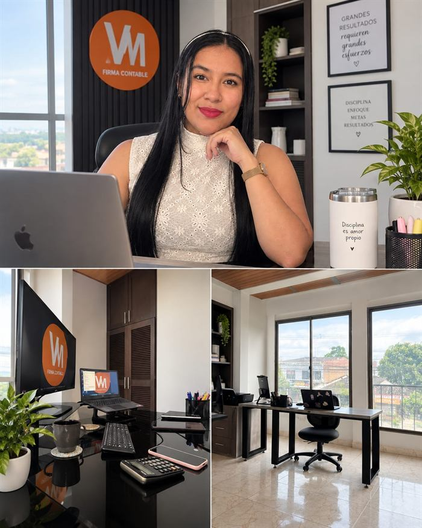
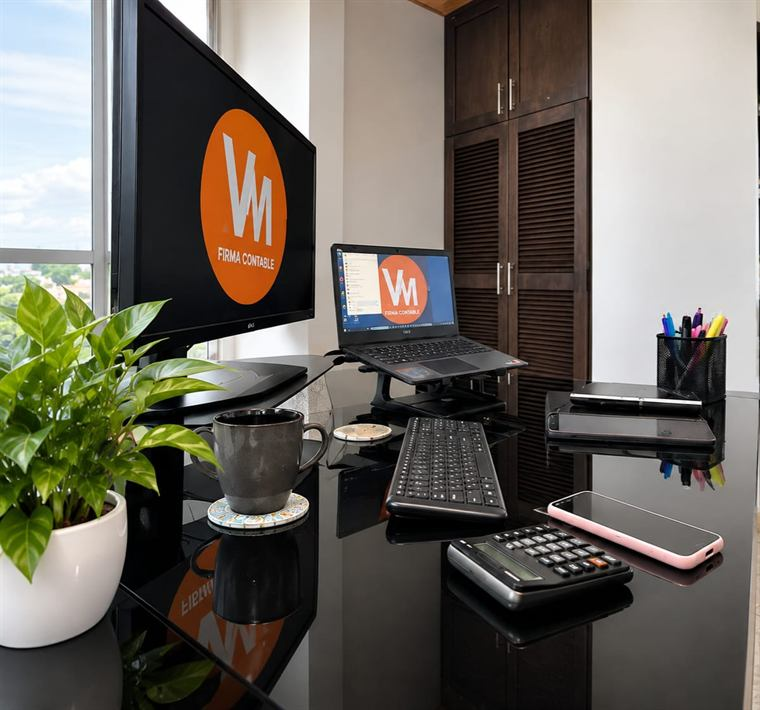

VM Firma Contable
Una firma contable que entiende tu negocio
VM Firma Contable nace con el propósito de brindar un acompañamiento contable, financiero y tributario cercano, responsable y orientado a las necesidades reales de cada cliente.
Más que cumplir con obligaciones contables, buscamos que la información financiera sea una herramienta para tomar mejores decisiones y construir negocios más sólidos.


La profesional y fundadora
Valentina M. Rodas, Contadora Pública
VM Firma Contable nace de la visión profesional de Valentina M. Rodas, quien dirige cada proceso de la firma nos acompaña para tomar las mejores decisiones contables.
- Formación Especialización en Legislación Tributaria Nacional e Internacional (Uniremington)
- Áreas de Experiencia Finanzas, Presupuestos, Planeación tributaria, Auditoría, Declaraciones, Revisoría fiscal, Protección patrimonial y Laboral
- Ubicación Chigorodó · Urabá, Antioquia
Nuestra historia
La visión detrás de VM Firma Contable.
Historia
VM Firma Contable es el nombre comercial del ejercicio profesional de Valentina Muñoz Rodas. Nace como respuesta a la necesidad que existe en la región de contar con un acompañamiento contable y tributario cercano, técnico y confiable.
A través de su experiencia acompañando a personas y empresas, Valentina ha desarrollado una forma de trabajo basada en el análisis, la responsabilidad y el conocimiento técnico, principios que se reflejan en la manera en que VM Firma Contable acompaña a cada uno de sus clientes.
Formación académica
- Contaduría Pública — Universidad Cooperativa de Colombia, sede Apartadó (2022).
- Especialización en Legislación Tributaria Nacional e Internacional — Universidad Remington (Uniremington).
Experiencia
- Socia en Grupo C&C Consultores S.A.S. (Apartadó), en alianza estratégica para la prestación de servicios contables y de consultoría.
- Docente e instructora en cursos y talleres de actualización tributaria, contable y financiera.
- Mentora de estudiantes de contabilidad, contadores independientes y emprendedores.
Especialización
El eje central de la práctica profesional de Valentina M. Rodas es la tributación nacional e internacional, con énfasis en:
- Finanzas
- Presupuestos
- Planeación tributaria
- Auditoría
- Declaraciones
- Revisoría fiscal
- Protección patrimonial
- Laboral
Ese enfoque se traduce en los servicios de VM Firma Contable: asesoría fiscal y tributaria, contabilidad y registro financiero, creación de sociedades, asesoría en cambios normativos, auditoría interna y apoyo para auditorías externas.
Cómo trabajamos
Nuestra filosofía de trabajo
Cada proceso contable y tributario en VM Firma Contable se sostiene sobre estos 4 pilares:
-
Cercanía y acompañamiento
Entendemos la realidad particular de cada empresa antes de proponer soluciones, y seguimos al lado del cliente en cada etapa del ciclo contable y tributario.
-
Confianza
Manejamos la información de cada cliente con responsabilidad, brindando el cumplimiento oportuno de los compromisos..
-
Claridad
Presentamos la información de forma clara y comprensible para que nuestros clientes conozcan su situación y puedan tomar decisiones con criterio.
-
Profesionalismo
Trabajamos con criterio técnico y nos mantenemos al día frente a los cambios contables y tributarios que pueden afectar a cada cliente.
Nuestro espacio
Conoce un poco de VM Firma Contable
La oficina de Chigorodó, las herramientas y el acompañamiento del día a día detrás de cada cliente del Urabá antioqueño.




Únete a nuestra comunidad de WhatsApp
Recibe contenido de valor, actualizaciones tributarias, recomendaciones y novedades de VM FIRMA CONTABLE directamente en WhatsApp.
- Avisos antes de cada vencimiento Las fechas clave del calendario tributario, con tiempo para prepararte.
- Cambios normativos en español claro Qué cambió, a quién le aplica y qué debes hacer al respecto.
- Tips prácticos para tu contabilidad Ideas cortas para ordenar tus soportes y evitar sanciones.
Sin spam, ni publicidad, solo información util.
Un ejemplo de lo que compartimos en la comunidad